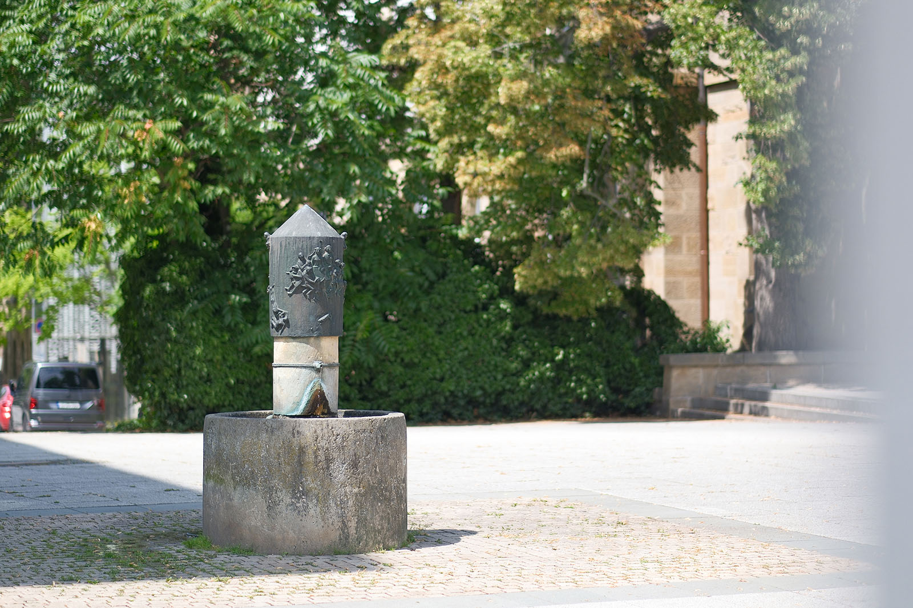
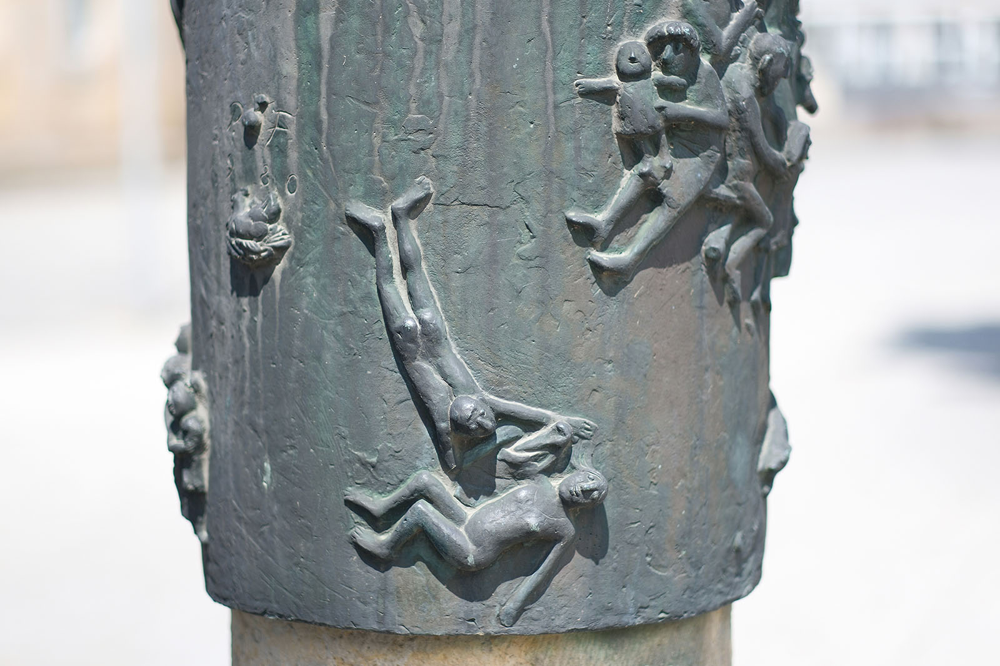
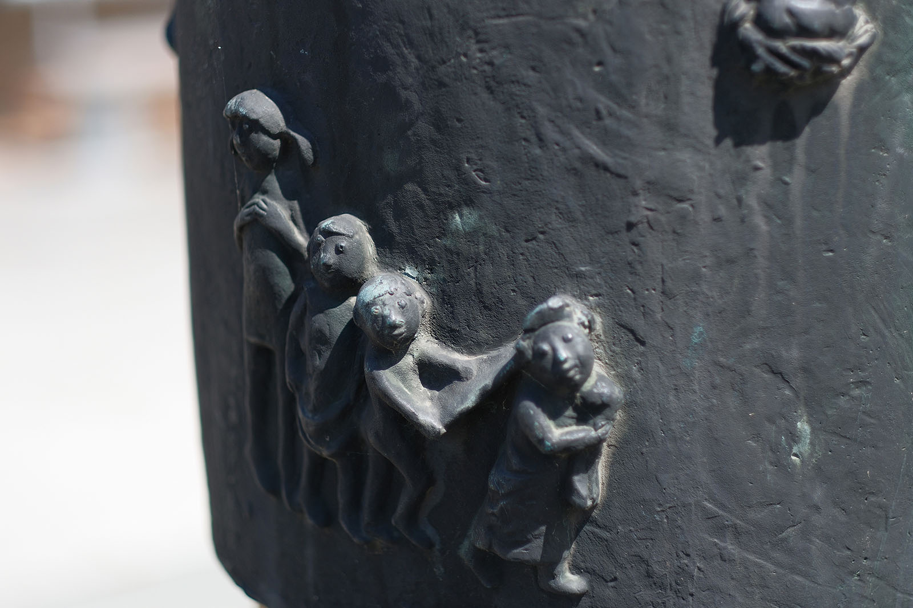
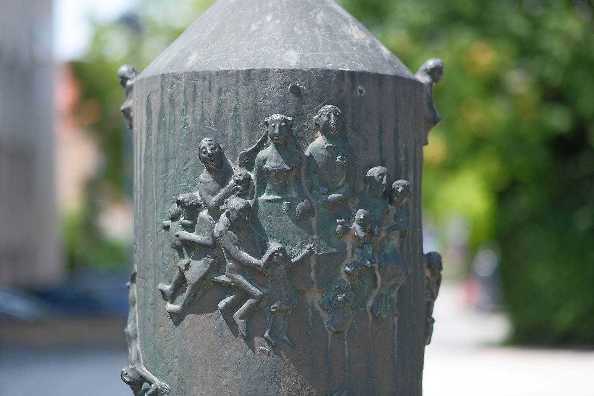
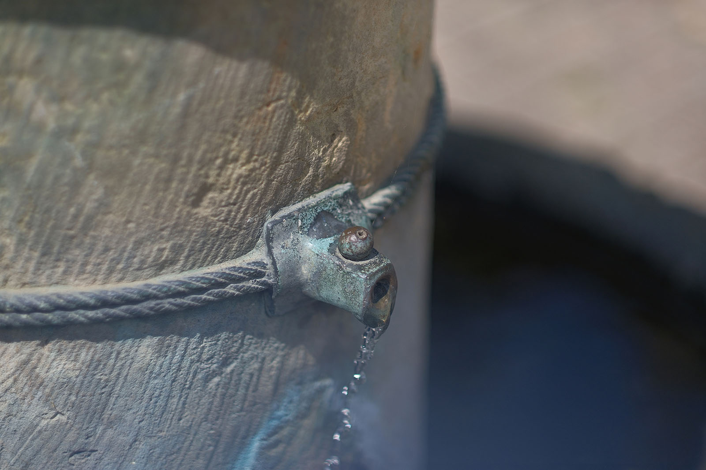
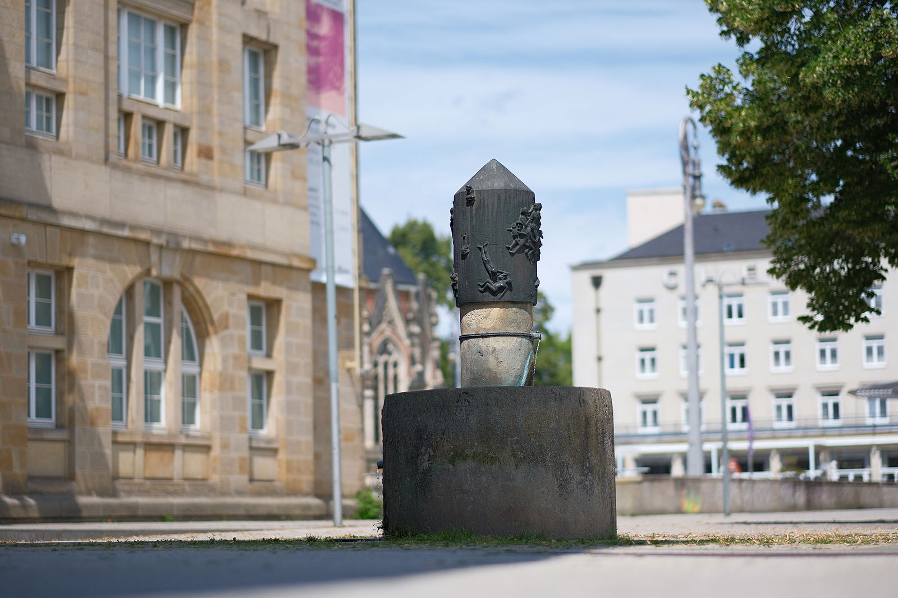

Recherche und Werkbeschreibung: Roman Pilz. Text und Fotografien wechseln sich wie in einem Magazin ab. Ein Klick auf ein Bild öffnet die Großansicht.
Der "Hochzeitsbrunnen" des Freitaler Bildhauers Peter Fritzsche wurde zwar ursprünglich nicht für Chemnitz geschaffen, stellte aber im Jahr 1984 ein Novum dar: Er war der erste öffentliche Trinkwasserbrunnen der Stadt.
Der Brunnen wurde ursprünglich Ende der 1970er Jahre für die im Osterzgebirge gelegene, heute zu Altenberg gehörige Kleinstadt Geising konzipiert. Die umlaufend als Relief auf der zylindrischen Brunnenkrone aus Bronze dargestellten Menschen scheinen tatsächlich mehr das idyllische Leben auf dem Lande als in der Großstadt darzustellen.
Peter Fritzsche wurde 1938 in Freital geboren und verstarb 2022 am selben Ort. Fritzsche absolvierte zunächst von 1955 bis 1958 beim VEB Elbe-Naturstein Dresden eine Lehre als Steinbildhauer. Anschließend studierte er von 1959 bis 1964 an der Hochschule für Bildende Künste Dresden in der Fachrichtung Plastik bei Walter Arnold, Gerd Jaeger, Herbert Naumann und Hans Steger.
Ab 1964 war Peter Fritzsche freiberuflich in Joachimsthal und Eberswalde tätig. Ab 1972 hatte der Bildhauer ein eigenes Atelier in seiner Heimatstadt Freital, wo er bis zuletzt lebte und arbeitete. Der Künstler arbeitete in Stein, Bronze und Ton.
Er ist besonders für seine zahlreichen Brunnengestaltungen bekannt. Seine Motive sind oft von Humor und Lebensfreude geprägt. Sie zeigen meist Motive aus der Tierwelt und dem Alltagsleben.
Bis Anfang der 1980er Jahre erhielt er vor allem Aufträge im Raum Brandenburg. Spätere Arbeiten sind schwerpunktmäßig in Sachsen zu finden. Öffentliche Arbeiten von ihm sind unter anderem in Freital, Eberswalde, Frankfurt/Oder und Berlin zu sehen.
In Chemnitz existieren zwei von ihm gestaltete Brunnen (IHK/Straße der Nationen und Alberti-Park/Sonnenberg) sowie eine Skulptur nahe des Schauspielhauses. 2001 wurde der Künstler mit dem Kultur- und Kunstpreis der Großen Kreisstadt Freital ausgezeichnet.
Szenen einer Ehe
Der „Hochzeitsbrunnen“ von Peter Fritzsche (Bronze/Sandstein; 1980/1984)
Die titelgebende Hochzeitsszene, direkt über dem Wasserauslauf auf der Seite Richtung Straße der Nationen, zeigt das fröhliche Brautpaar an einem Tisch mit der quirligen Familie. Blumengeschmückt kreuzen sich die Hände der beiden Liebenden. Die Becher stehen zum Prosit, die Gäste versichern sich sanft lächelnd ihrer eigenen Liebe und dem Nachwuchs, der auf dem Schoß schaukelt. Ein kleines Mädchen ist an die Tafel herangetreten, um mit den Großen zu trinken, wird aber von einem kleinen Hund abgelenkt, der wild hinter einem Ball herläuft.
Die runde Form des figürlichen Reliefs, das nur locker und vereinzelt auf der ansonsten leeren Bronzefläche verstreut ist, lockt den Betrachter, einen Rundgang um den Brunnen zu machen. Spielerisch und humorvoll thematisiert Fritzsche das Suchen und Finden der Liebe. Seine Geschöpfe wirken mit scharfer Feder gezeichnet und wie liebevolle Karikaturen mit großen Knopfaugen.
Oben, direkt am Übergang zur kegelförmigen Spitze, sitzen links und rechts jeweils ein Mann und eine Frau – sie halten noch alleine Ausschau nach dem passenden Anderen. Unten, links von der Hochzeit, bahnt sich dagegen schon ein Gespräch an zwischen zwei nackten Liegenden, wie man sie im Freibad oder am Fluss antreffen könnte.
Immer weiter nach links kommt ein brütendes Huhn unter den Initialen und der Datierung des Künstlers. Eine kleine Kindergruppe spielt ebenfalls Hochzeit: Das kleinste trägt den Schleier und die größeren folgen. Darüber wieder ein liegendes Paar, aber schon in trauter Zweisamkeit eng beieinander, als wenn sie auf der Wiese liegend, himmelblickend sich ihre gemeinsame Zukunft ausmalen. Die Umgehung endet mit einer weiteren, eher häuslichen Badeszene, wo eine Frau den Mann beim Einstieg in den Waschzuber stützt und ihm einen Lappen hinterherträgt.

Ein weiteres, besonders schönes Detail der Anlage ist ihre Wasserführung. Die kleine Röhre, aus der das Wasser oben zwischen zwei zusammengefügten Steinen gespendet wird, scheint von einem die Brunnensäule umlaufenden Seil in Bronze gehalten zu werden. Das Seil verbirgt zugleich die trennende Fuge und versinnbildlicht das Motiv der Verbindung: von Mann und Frau, wie von Stein und Metall. An der Hinterseite des massiven Sandsteinbeckens ist außerdem ein Abfluss so montiert, der das Wasser vor dem Überlauf noch in eine kleine Schale fließen lässt, die der gelernte Steinmetz Fritzsche sich als Hundetränke gedacht hat.
Hochzeit im Freien, barfüßige Kinder, Tiere, Flirt zwischen Wasser und Wiesen – das passt gut zu den weiten Fluren auf den Hügeln bei Geisig, wo Rathaus, Schule und Kirche in unmittelbarer Nähe stehen. Der erste von Fritsche realisierte Hochzeitsbrunnen kam allerdings nicht ins Erzgebirge, sondern wurde von den Planern nach Meißen verlegt und dort Anfang der 1980er auf dem sogenannten Fummelplatz in der ebenfalls idyllischen Altstadt unter dem Dom platziert. Kurz nach der Wende wurde der Brunnen dort jedoch abgebaut und galt lange als verschollen. Mehr als 30 Jahre später wurde er in Einzelteilen wieder aufgefunden: Das steinerne Becken ist heute ein Teil des "Spazenbrunnens" und die Bronze dem Stadtmuseum von Meißen gewidmet.
Nur in Chemnitz ist der Brunnen also noch in seiner vom Künstler gedachten Form anzutreffen. Der wenig jüngere Zwilling des tatsächlich nur knapp ein Jahrzehnt in der Domstadt plätschernden Brunnens wurde 1983/84 in einer Ausstellung junger Bildhauer in Magdeburg präsentiert. Er überzeugte wohl auch die verantwortlichen Gremien für die Freiraumgestaltung von Karl-Marx-Stadt. Bei Neubauten, Rekonstruktionen oder zu besonderen Anlässen wurde meist federführend durch das Büro für architekturbezogene Kunst ein Konzept zur künstlerischen Gestaltung entwickelt.
In Zusammenarbeit mit dem Verband bildender Künstler wurden dann vom Rat der Stadt und dem Bezirk regelmäßig öffentliche Mittel für den Ankauf oder für die Beauftragung neuer Kunstwerke vergeben. 1984 wurde der Brunnen möglicherweise zur Feier des 35. Jahrestages der DDR aufgestellt – das feierliche, aber zugleich volkstümliche, lebensfrohe Thema würde zu diesem Anlass passen.

Das heutige IHK-Gebäude, an dessen nördlicher Fassade der Brunnen positioniert ist, wurde bereits Jahre zuvor, von 1958 bis 1960, vom Stadtarchitekten Rudolf Weißer (1910–1981) als Verwaltungsgebäude für den Rat des Bezirks gebaut. Es steht heute als anerkanntes Zeugnis der DDR-Architektur zwischen Traditionalismus und Moderne unter Denkmalschutz. Die traditionsreiche Industrie- und Handelskammer von Chemnitz bezog bereits 1960 das Gebäude, war aber im Sozialismus ein untergeordnetes Gremium, das nach weitreichenden Verstaatlichungen 1972 nicht mehr seine eigentliche Funktion als selbständige Interessenvertretung erfüllen konnte. Zum Zeitpunkt der Einweihung des Brunnens hieß der Verband entsprechend nur noch Handels- und Gewerbekammer.
Der Brunnen wurde seit 1984 in enger Kooperation mit der Kammer betrieben: So befindet sich die Pumpentechnik im Keller des Gebäudes und die Kosten für den Unterhalt des Brunnens wurden jahrzehntelang von der IHK getragen, seit 2004 als offizielles Sponsoring an die Stadt. Die Stadt als Besitzer des Brunnens betreibt den Brunnen heute wieder allein aus öffentlichen Mitteln – nach der alljährlichen Winterpause sprudelt das Wasser meist wieder ab Ende März. Unter den Trinkwasserbrunnen wird der Brunnen allerdings nicht mehr aufgezählt.
Seit 2021 ist der Platz, auf dem der Brunnen steht und wo am Ostgiebel der Kunstsammlungen auch bis 2004 der Versteinerte Wald aufgebaut war, nach Arthur Weiner benannt. Weinert war Chemnitzer Bürger und Jurist. Er wurde als prominentes Mitglied der Jüdischen Gemeinde 1933 als einer der ersten Deutschen von der SA entführt, misshandelt und ermordet – sein Tod blieb ungesühnt.
Peter Fritzsche wurde 1938 in Freital geboren und verstarb 2022 am selben Ort. Fritzsche absolvierte zunächst von 1955 bis 1958 beim VEB Elbe-Naturstein Dresden eine Lehre als Steinbildhauer. Anschließend studierte er von 1959 bis 1964 an der Hochschule für Bildende Künste Dresden in der Fachrichtung Plastik bei Walter Arnold, Gerd Jaeger, Herbert Naumann und Hans Steger.

Ab 1964 war Peter Fritzsche freiberuflich in Joachimsthal und Eberswalde tätig. Ab 1972 hatte der Bildhauer ein eigenes Atelier in seiner Heimatstadt Freital, wo er bis zuletzt lebte und arbeitete. Der Künstler arbeitete in Stein, Bronze und Ton.
Er ist besonders für seine zahlreichen Brunnengestaltungen bekannt. Seine Motive sind oft von Humor und Lebensfreude geprägt. Sie zeigen meist Motive aus der Tierwelt und dem Alltagsleben.
Bis Anfang der 1980er Jahre erhielt er vor allem Aufträge im Raum Brandenburg. Spätere Arbeiten sind schwerpunktmäßig in Sachsen zu finden. Öffentliche Arbeiten von ihm sind unter anderem in Freital, Eberswalde, Frankfurt/Oder und Berlin zu sehen.
In Chemnitz existieren zwei von ihm gestaltete Brunnen (IHK/Straße der Nationen und Alberti-Park/Sonnenberg) sowie eine Skulptur nahe des Schauspielhauses. 2001 wurde der Künstler mit dem Kultur- und Kunstpreis der Großen Kreisstadt Freital ausgezeichnet.


Szenen einer Ehe
Der „Hochzeitsbrunnen“ von Peter Fritzsche (Bronze/Sandstein; 1980/1984)
